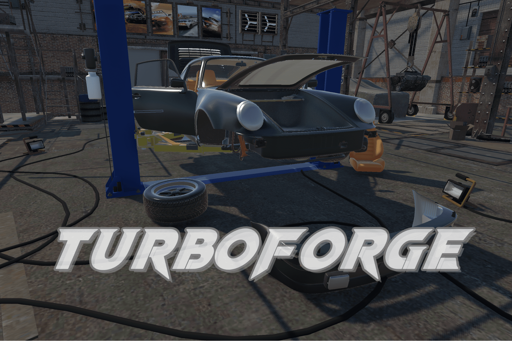
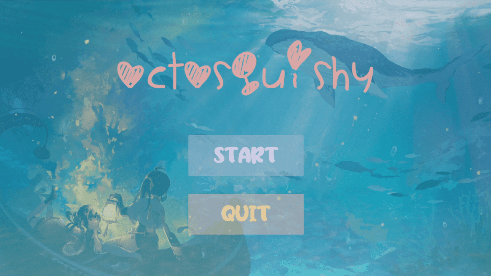

TechArt
Game Development, AR/VR, Unity, C#.
You are kindly invited to review my Portfolio:
[ YouTube/Download]
[ PDF/Google Slides]
Selected Projects:

Made with Unity3D URP × Meta XR SDK × XR Interaction Toolkit
Concepts:
Introducing TurboForge: Porsche 930 VR Edition – a MR car crafting simulator where players build their dream sports car, the iconic Porsche 930 Turbo. With realistic workshop environments and intuitive VR controls, assemble and customize every detail, from the engine to the exterior. Install the seats, engines, bumpers and wheels to make your car classic. Then, hit the virtual racetracks to visualize your builds in the showroom. Get ready to experience the thrill of assembling the ultimate sports car in TurboForge !
TurboForge
[Project Page] [Video]Made with Unity3D URP × Meta XR SDK × XR Interaction Toolkit
Concepts:
Introducing TurboForge: Porsche 930 VR Edition – a MR car crafting simulator where players build their dream sports car, the iconic Porsche 930 Turbo. With realistic workshop environments and intuitive VR controls, assemble and customize every detail, from the engine to the exterior. Install the seats, engines, bumpers and wheels to make your car classic. Then, hit the virtual racetracks to visualize your builds in the showroom. Get ready to experience the thrill of assembling the ultimate sports car in TurboForge !

Walk Your Cat!
[Project Page] [Video]Made with Unity3D URP × XR Interaction Toolkit
Concepts:
Welcome to the world "Walk Your Cat"! In this technologically advanced era, you'll embark on an exciting journey with your adorable virtual feline companion. But beware, even though your furry friend may be fictional, the fun is very real!
Why not try out the latest in cat play technology? Grab your laser pointer and guide your virtual cat through a myriad of delightful challenges, both in the real world and the digital realm. Are you ready to unleash your imagination and embark on an infinite fantasy journey? Let the games begin!

Made with Unity3D URP
Concepts:
In the vibrant underwater world of Aqua Haven, lived our cute octopus, Octosquishy. Known for his friendly nature and love for exploration, Octosquishy stumbled upon a mysterious ancient inkwell one sunny day. This enchanted inkwell granted him the power to turn ordinary squids into playful, water-blasting sidekicks. As the news of his newfound abilities spread, a mischievous group of evil sharks began wreaking havoc, threatening the harmony of Aqua Haven. With his loyal squad of squid buddies, Octosquishy sets out on a heartwarming adventure to restore peace to the ocean depths.
Octosquishy
[Project Page] [Video]Made with Unity3D URP
Concepts:
In the vibrant underwater world of Aqua Haven, lived our cute octopus, Octosquishy. Known for his friendly nature and love for exploration, Octosquishy stumbled upon a mysterious ancient inkwell one sunny day. This enchanted inkwell granted him the power to turn ordinary squids into playful, water-blasting sidekicks. As the news of his newfound abilities spread, a mischievous group of evil sharks began wreaking havoc, threatening the harmony of Aqua Haven. With his loyal squad of squid buddies, Octosquishy sets out on a heartwarming adventure to restore peace to the ocean depths.